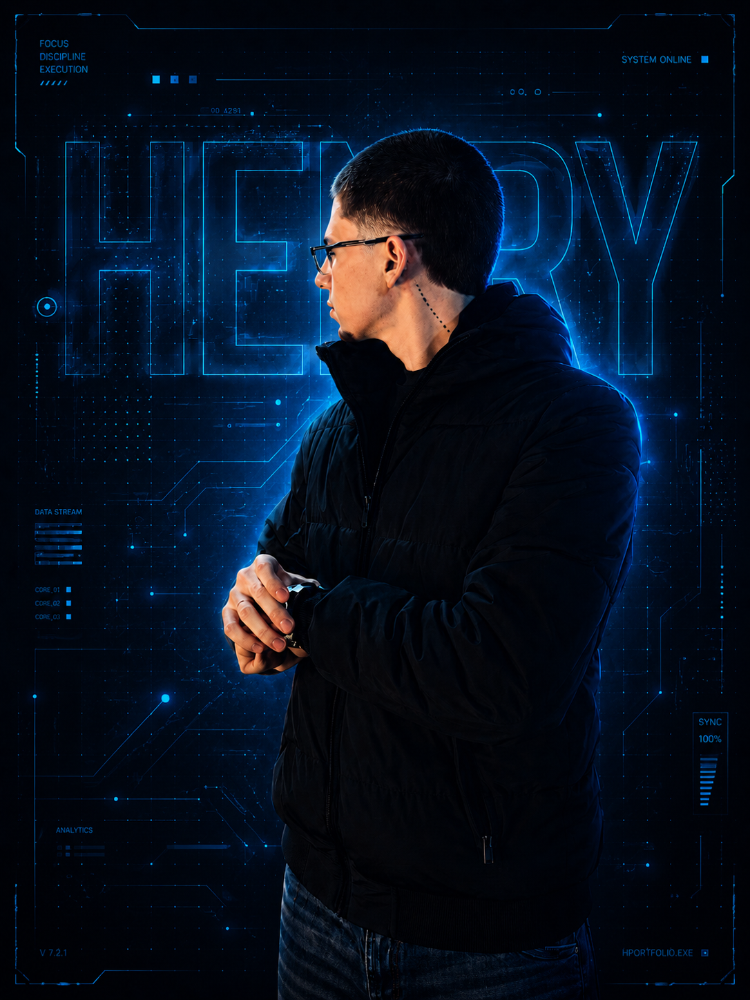

Interface clara
Layouts responsivos, hierarquia visual forte e experiência pensada para conversão.
desenvolvedor full-stack | web, mobile e automações
disponível para novos projetosSou Henry, desenvolvedor que cria landing pages, dashboards, apps e integrações com estética premium, código organizado e deploy pronto para impressionar desde o primeiro acesso.
sobre
Crio interfaces com aparência profissional, fluxo claro e base técnica preparada para virar produto real, não só uma tela bonita.
O foco é unir visual marcante, responsividade, integração com APIs e deploy rápido para entregar sites, dashboards e automações que passam confiança desde o primeiro acesso.
Layouts responsivos, hierarquia visual forte e experiência pensada para conversão.
Componentes organizados, estados previsíveis e estrutura simples de manter.
Integrações, ajustes finos, publicação e acabamento para apresentar sem improviso.

responsável pelo serviço
Atendimento direto, planejamento, desenvolvimento e publicação ficam sob a responsabilidade de Henry, mantendo cada etapa do projeto alinhada, profissional e pronta para entregar uma experiência digital de alto nível.
Organiza objetivo, prioridades, visual e funcionalidades antes da execução.
Constrói interfaces, integrações, automações e ajustes responsivos.
Revisa acabamento, performance, publicação e pontos de contato do site.
sites publicados
Uma área direta para apresentar imagens dos seus sites, explicar o objetivo de cada projeto e levar o visitante para acessar a versão online.

Landing page escura e elegante para estúdio de tatuagem, com agenda em destaque, portfólio visual e chamada direta para contato.
Acessar site
Interface premium para artista de tatuagem, com identidade sofisticada, foco em assinatura visual e navegação pensada para apresentar o trabalho.
Acessar site
Site de tecnologia com estética azul, comunicação objetiva e foco em automação, dados e sistemas integrados para empresas.
Acessar sitestack
O foco é escolher tecnologia que sustenta a experiência: velocidade, responsividade, integração com APIs, animação na medida e uma base simples de evoluir depois do lançamento.
Interfaces rápidas, componentes reutilizáveis e páginas prontas para escalar.
Visual premium, microinterações e detalhes técnicos que deixam o site memorável.
Dados, autenticação e integrações para transformar layout em produto funcional.
Versionamento, publicação rápida e leitura de métricas após o lançamento.
github
Repositórios, estudos e projetos em evolução reunidos em um perfil direto para quem quer ver estrutura, organização e prática real de desenvolvimento.
processo
Um fluxo direto para sair da ideia solta e chegar em algo navegável, vendável e pronto para publicar.
Objetivo, público, referências, funcionalidades e prioridade do primeiro deploy.
Layout responsivo, identidade visual, componentes e fluxo principal da experiência.
Implementação organizada com atenção a performance, estados, acessibilidade e APIs.
Publicação, revisão final, ajustes finos e próximos passos para evoluir o produto.
contato
Escolha o tipo de projeto e envie uma mensagem já organizada pelo WhatsApp. Direto, rápido e com as informações certas para começar a conversa.